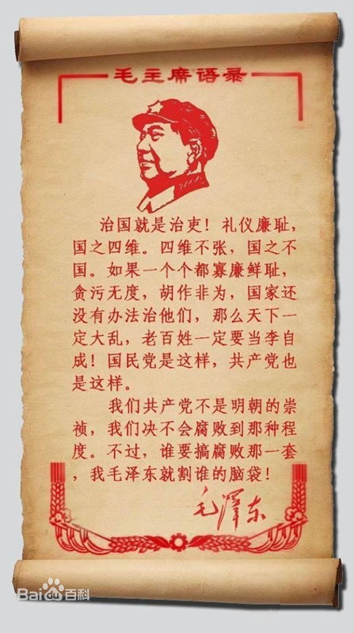

Conversation with 81184027 at Thu 08 May 2014 09:31:01 AM CST on 154115835 (webqq)
(09:30:43 AM) 蔚蓝的天空: 
(09:30:43 AM) 蔚蓝的天空:
(09:36:54 AM) 醒悟: 人因为都要死所以人生无意义，人生的价值要自己定。自己不会定找人定，那就是宗教所有教派无非就是讲生死，命运，人生的价值!骗死人不犯法:D
(09:37:38 AM) 蔚蓝的天空: 除了生死没什么大事
(09:39:08 AM) 阿萨汗蛋包飯: 但是宗教容易被别有用心的人利用
(09:39:18 AM) 阿萨汗蛋包飯: 信徒成为被利用的工具
(09:39:51 AM) 蔚蓝的天空: 共产党也是宗教
(09:40:00 AM) 蔚蓝的天空: 党员也是教徒
(09:40:28 AM) 蔚蓝的天空: 只不过他是往好的方向发展
(09:40:30 AM) 阿萨汗蛋包飯: 可以这样理解。但共产党只是一个无神论的组织，不被世界宗教认可
(09:41:00 AM) 蔚蓝的天空: 宗教都是有神论
(09:41:03 AM) 阿萨汗蛋包飯: 中国人的户口本上有宗教信仰这一栏，大部分人是无信仰，活空白着
(09:41:41 AM) 蔚蓝的天空: 信仰 填写共产主义
(09:41:47 AM) 阿萨汗蛋包飯: 空白着的。我的户口本上不一样，写着基督教新教:D
(09:42:02 AM) 阿萨汗蛋包飯: 共产主义不是宗教信仰
(09:42:12 AM) 阿萨汗蛋包飯: 只是一种乌托邦的理想主义
(09:42:27 AM) 福建-福州&水浒: 我的网名
(09:42:32 AM) 蔚蓝的天空: 但也是信仰
(09:42:44 AM) 福建-福州&水浒: 乌托邦意思 空想主义
(09:42:46 AM) 阿萨汗蛋包飯: 是信仰不错，但乌托邦不是宗教信仰
(09:42:47 AM) 蔚蓝的天空: 共产主义 社会主义都是信仰
(09:43:08 AM) 福建-福州&水浒: 也是信仰
(09:43:13 AM) 向北方゛明年此时: 不要妄下结论
(09:43:24 AM) 阿萨汗蛋包飯: 宗教是有范围的，有神论。其他所谓信仰范围太大，不属于宗教范畴
(09:43:37 AM) 蔚蓝的天空: 那个搅动中国上万军警的周克华 大家还记得不
(09:43:44 AM) 福建-福州&水浒: 就比如老毛 为人民服务，就是共产党的宗旨
(09:43:51 AM) 福建-福州&水浒: 记得
(09:44:13 AM) 蔚蓝的天空: 他的信仰一栏 是 非共产主义非社会主义 双飞
(09:44:32 AM) 福建-福州&水浒: 宗教都是有神论
(09:44:39 AM) 阿萨汗蛋包飯: 老毛按照宗教界的说法，他是人间的上帝，也就是取代了上帝的地位，湖南人把老毛当做神来崇拜
(09:44:45 AM) 福建-福州&水浒: 佛教不是有神论
(09:45:04 AM) 阿萨汗蛋包飯: 宗教信仰指的是有神论或者一神论
(09:45:15 AM) 蔚蓝的天空: 毛爷爷没有强迫谁
(09:45:29 AM) 蔚蓝的天空: 是人民自愿的
(09:45:33 AM) 蔚蓝的天空: 自发的
(09:45:35 AM) 阿萨汗蛋包飯: 把人当做神来崇拜的不算宗教吧
(09:46:03 AM) 蔚蓝的天空: 因为他的历史功绩受人敬仰
(09:46:07 AM) 阿萨汗蛋包飯: 湖南人把老毛当做神来崇拜
福建这里也有家里贴着老毛崇拜的
(09:46:08 AM) 蔚蓝的天空: 崇拜
(09:46:12 AM) 蔚蓝的天空: 是正常
(09:46:17 AM) 蔚蓝的天空: 对呀
(09:46:32 AM) 蔚蓝的天空: 我家也供奉毛的像
(09:47:03 AM) 阿萨汗蛋包飯: 我家没有毛像，只有贴着基督教年历表，教堂赠的
(09:47:16 AM) 蔚蓝的天空: 说明他给人民办过好事
(09:47:40 AM) 蔚蓝的天空: 是 实实在在的好事
(09:48:00 AM) 蔚蓝的天空: 不是像宗教那样看不见摸不着】
(09:48:11 AM) 醒悟: 上帝当年也是人，而且私生子，而且钉死十字架
(09:48:12 AM) 蔚蓝的天空: 天天搞那些没用的聚会
(09:48:27 AM) 蔚蓝的天空: 上帝是谁
(09:48:37 AM) 蔚蓝的天空: 压根没有的事
(09:48:47 AM) 阿萨汗蛋包飯: 宗教的神确实看不见摸不着，但却吸引了全球上亿的信徒，包括奥巴马
(09:48:53 AM) 蔚蓝的天空: 所谓神 都是人造出来的
(09:49:03 AM) 包头-青山&随心: 上帝他爷爷是谁
(09:49:21 AM) 阿萨汗蛋包飯: 耶和华
(09:49:29 AM) The account has disconnected and you are no longer in this chat. You will automatically rejoin the chat when the account reconnects.